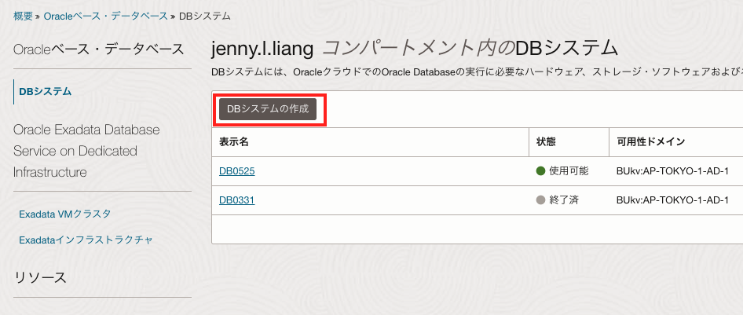
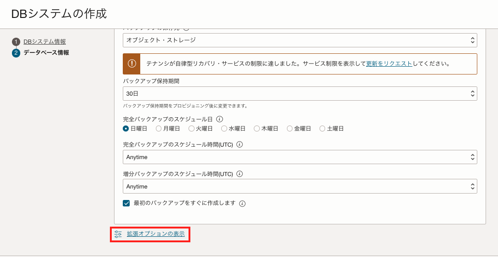
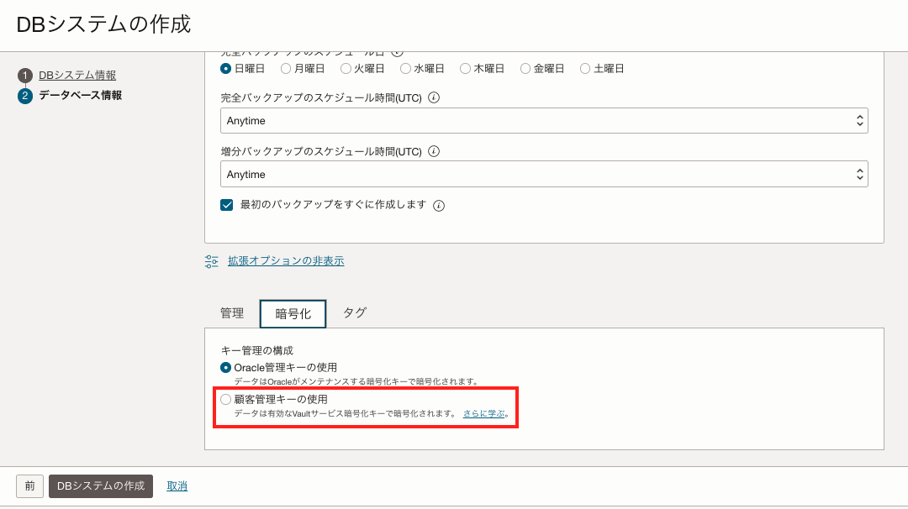
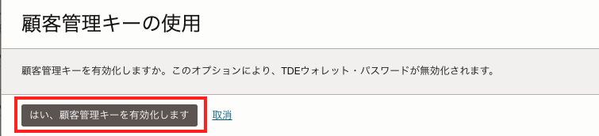
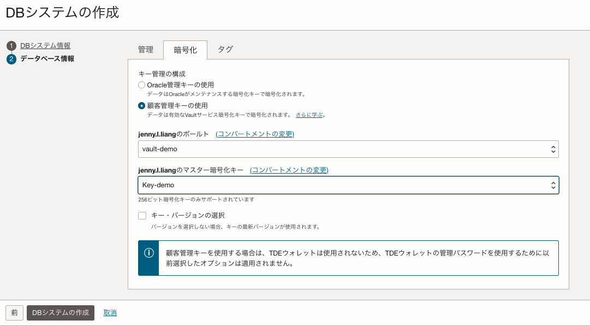
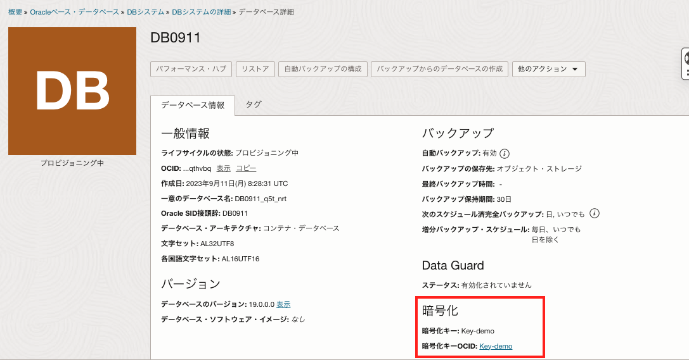
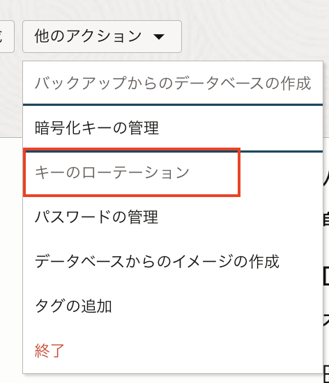
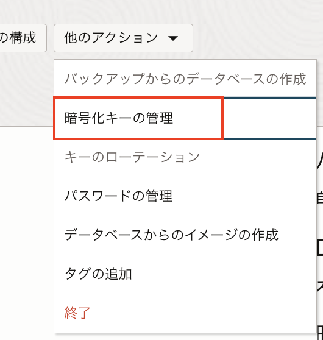

OCI Vaultはユーザーがセキュアに暗号鍵や、パスワードなどの”シークレット”を管理、運用できる鍵管理サービスです。
通常、OCIのオブジェクト・ストレージやブート・ボリュームなどのストレージサービスは、デフォルトでオラクルが管理する暗号鍵で暗号化されます。 OCI Vaultサービスを使用すると、ストレージサービスの暗号化に使用する暗号鍵を、オラクル管理の暗号鍵からユーザー管理の暗号鍵に変更することができます。
また、OCI Vaultサービスを利用するメリットとして、OCI IAMや監査ログによるアクセス管理、FIPS 140-2 Security Level 3の要件への対応、ユーザーによる暗号鍵のローテーションやバックアップを実施することができる、などが挙げられます。
OCI Vaultサービスで管理できる暗号鍵の暗号化アルゴリズムなどの詳細はドキュメントをご参照ください。
本チュートリアルでは、Vaultサービスでユーザー管理の暗号鍵を使用してBase Databaseを暗号化する手順を紹介します。
所要時間 : 約20分
前提条件 :
- OpenSSLをクライアント端末、もしくは任意のLinuxの環境にインストールしていること（本チュートリアルではデフォルトでOpenSSLがインストールされているCloud Shellを使用します）
- OCIチュートリアル「Vaultを作成し 顧客管理の鍵をインポートする」を参考にVaultと暗号鍵を作成し、インポートしていること。マスター暗号キーはAESを指定します。
注意 :
- ※チュートリアル内の画面ショットについてはOracle Cloud Infrastructureの現在のコンソール画面と異なっている場合があります。
1. Vaultの準備
OCIチュートリアル「Vaultを作成し 顧客管理の鍵をインポートする」を参考にVaultと暗号鍵を作成し、インポートしてください。前述のチュートリアル記事通り、マスター暗号化キーはAESを指定して作成してください。
2. Base Databaseインスタンスの作成
OCIコンソール → Oracle Database → Oracleベース・データベース・サービス → 「DBシステムの作成」ボタンをクリックします。 
OCIチュートリアルOracle Database編「101:Oracle Cloud上でOracle Databaseを使おう」を参考に、DBシステムの作成画面の各項目を入力、選択します。
DBシステムの作成画面の「データベース情報」画面の一番下の「拡張オプションの表示」を選択します。 
暗号化のタブを開き、「顧客管理キーの使用」をチェックします。

顧客管理キーの使用について、確認画面が表示されるので「はい、顧客管理キーを有効化します」を選択します。

手順1で作成したボールトとマスター暗号化キーをそれぞれ選択し、「DBシステムの作成」ボタンをクリックします。

以上で、ユーザー管理の暗号鍵を使用したBase Databaseインスタンスを暗号化する手順は完了です。
Base Database詳細画面のデータベース詳細から、顧客管理の暗号鍵が暗号化に使われていることを確認できます。

また、暗号鍵はDBシステムの詳細画面→「他のアクション」→「キーのローテーション」から、暗号化に使用する暗号鍵をローテーションすることができます。

「暗号化キーの管理」からは、暗号化に使用するVault、およびマスター暗号キーを変更することが可能です。
